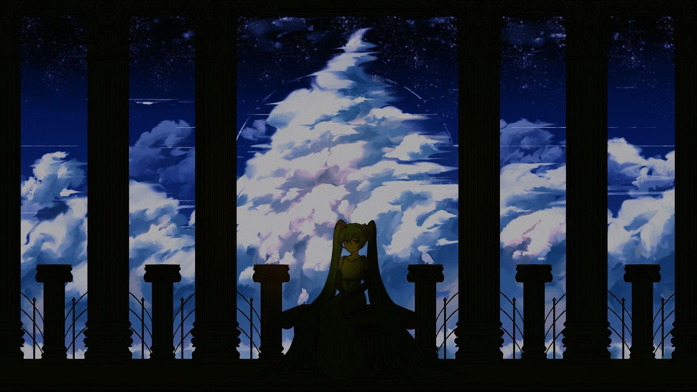
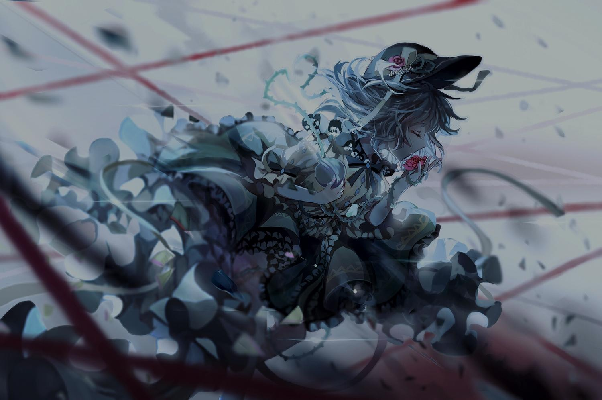

6.73
NM
NM
B-CLASS HEROES
鬱P
6.80
NM
NM
Blue Zenith
xi
Mapper: Asphyxia
Difficulty: ktgster's Extreme
Beatmap ID: 657917
CS
4
AR
9.4
OD
8.7

200.0

3:49

2320
6.24
NM
NM
阿修羅ちゃん
Ado
Mapper: flake
Difficulty: NEEEEEEEEEEEEEEEEEEEEEEEEEEE
Beatmap ID: 3397676
CS
4.4
AR
9.6
OD
9.0
156.0
3:08
1510
![Feryquitous feat. Sennzai - Rugie (Sagu) [Askeira]](./darkened-backgrounds/3742246.jpg)
6.19
NM
NM
Rugie
Feryquitous feat. Sennzai
6.82
NM
NM
DESPERATE DEATHPARADE
69 de 74
6.47
NM
NM
wants mom to know she looks cool and doesn't plan on changing
leroy
Mapper: wafer
Difficulty: love her even tho i cant tell her everything i want
Beatmap ID: 4215338
CS
4
AR
9.3
OD
8.6
194.0
2:13
1094
![VaVa - Wo Xiang Dui Ni Shuo Baby (Yu vs. CTM Radio Mix) (Nightcore Mix) (__Ag) [Main DJ]](./darkened-backgrounds/4222413.jpg)
6.41
HD
HD
我想对你说Baby (Yu vs. CTM Radio Mix) (Nightcore Mix)
毛衍七
5.73
HD
HD
Rin to Shite Saku Hana no Gotoku ~Hinabita edtion~
Hinatabi Bitter Sweets
6.16
HD
HD
戦い
藤澤慶昌
6.75
HR
HR
世界がキミに出会うまで
喜多修平
6.17
HR
HR
Doctor Whomst
Origami Angel
6.47
HR
HR
GOODBOUNCE (Musync Edit)
EBIMAYO
6.54
DT
DT
ロキ
まふまふ feat. そらる
6.72
DT
DT
TWEEKER
天音
Mapper: TicClick
Difficulty: Mikii's Insane
Beatmap ID: 954703
CS
4
AR
10.33
OD
9.78
247.5
2:17
1242
6.43
DT
DT
晩夏
MANY THANKS! feat. 薛南
6.16
DT
DT
STINGER MISSILE
Akira Complex
Mapper: Aeril
Difficulty: Celine & taku's INSANE
Beatmap ID: 4200147
CS
4
AR
9.87
OD
9.78
195.0
2:30
1217
6.46 (6.79)
FM
FM
トラウマ催眠少女さとり！
DJ SHARPNEL feat. 一ノ瀬月琉
5.45 (6.32)
FM
FM
CRASH!! (Let's Do It)
ヒャダイン
5.96 (6.38)
FM
FM
History Maker (TV Size)
Dean Fujitoka
Mapper: fartownik
Difficulty: Born to Make History
Beatmap ID: 1373482
CS
4
AR
9.3
OD
9.0
134.0
1:28
475
6.28 (6.78)
F+
F+
Yandere forces you to watch top 10 impossible football moments asmr
kiruo
Mapper: Stage my mommy
Difficulty: KiruoMyMommy
Beatmap ID: 4500683
CS
5
AR
9.2
OD
9.6
150.25
1:15
261
7.92 (9.72)
F+
F+
Harumachi Clover
Hanasaka Yui (CV : M.A.O)
![kakichoco - Zan'ei (ilia) [Boy Lover Collab]](./darkened-backgrounds/4808858.jpg)
6.95 (7.43)
F+
F+
残影
kakichoco

6.58
TB
TB
Hyper banquet
Paradot.